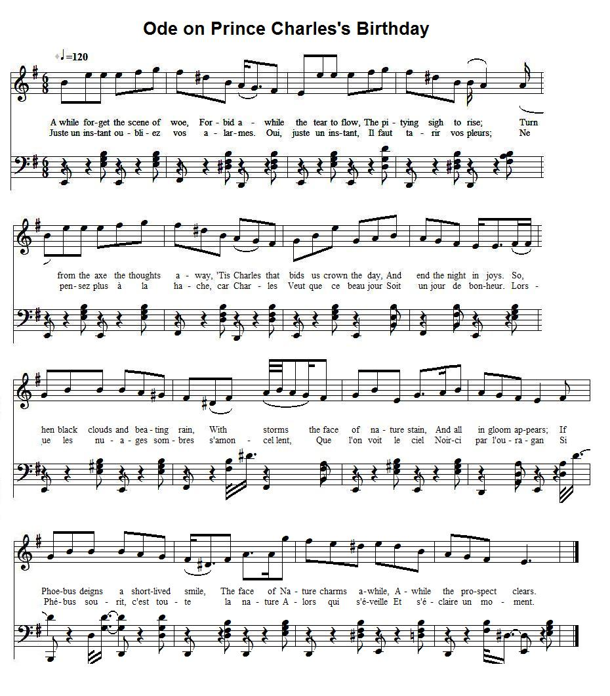

Ode on the birthday of Prince Charles Edward Stuart
Ode pour l'anniversaire du Prince Charles Edouard Stuart
by the Rev. Dr Isaacs, of Exeter
From Robert Malcolm's "Jacobite Minstrelsy", page 322, 1828.And from the MS at Towneley Hall, page 37
Tune - Mélodie
No tune known - Here replaced by "John Clark"
from Hogg's "Jacobite Relics" 1st Series N°74
Sequenced by Christian Souchon

|
To the lyrics:
English Jacobitism : "The original manuscript of this composition, which was only published a few years ago, remained for three-fourths of a century in the possession of a distinguished family in Somersetshire, to whose Jacobite ancestor it had been presented by its author, the Rev. Dr Isaacs, of Exeter . The care with which it was thus preserved as a literary relic, shows that the principles which it inculcates, and for which the west of England was notorious in 1715, were not by any means extinct there in 1745." From Robert Malcolm's "Jacobite Minstrelsy", page 322, 1828. |
A propos du texte:
Jacobites d'Angleterre : "Le manuscrit original de cette composition n'a été publié que depuis quelques années. Il était resté pendant trois quarts de siècles entre les mains d'une famille connue du Somerset, qui le tenait d'un ancêtre à qui son auteur, le Rév. Dr Isaac, d'Exeter , l'avait offert. Le soin avec lequel cette relique littéraire a été conservée montre que les idées qu'elle défend, et qui étaient répandues dans l'ouest de l'Angleterre en 1715, étaient loin d'avoir disparu en 1745". From Robert Malcolm's "Jacobite Minstrelsy", page 322, 1828. |

|
ODE ON THE BIRTH-DAY OF PRINCE CHARLES EDWARD STUART,
THE 20TH OF DECEMBER, 1746. 1. A while forget the scene(s) of woe, Forbid awhile the tear(s) to flow, The pitying sigh(s) to rise ; Turn from the axe the thoughts away, [1] 'Tis Charles that bids us crown the day, And end the night in joys. So, when black clouds and beating rain, With storms the face of nature stain, And all in gloom appears; If Phoebus deigns a short-lived smile, The face of Nature charms awhile, A while the prospect clears (chears). 2. Come then, and whilst we largely pour Libations to the genial hour, That gave our hero birth ; Let us invoke the tuneful Nine, To sing (t'inspire) a theme, like them (theirs), divine, To sing his race on earth! (our hero's worth) How in (on) his tender infant years, The guardian (careful) hand of heaven appears To watch its chosen care; Estranged from ev'ry foe to (changed to ev'ry thing but) truth, Virtuous affliction form'd his youth, Instructive tho(ugh) severe. 3. No sinful court its poison lent, An early bane his life to taint, And blast his young renown : His father's virtues fire(d) his heart — His father's sufferings truth impart, To (that) form him for a throne. How, at an age, when pleasures' charms Allure the stripling to her arms, He formed the great design, T(o) assert his injured father's cause, Restore his suff(e)ring country's laws, And prove his right divine. 4. How, when on Scotia's beach he stood, The wond(e)ring throng around him crowd. To bend th(e) obedient knee; Then, thinking on their country chain'd, They wept at (such) worth so long detain'd By Fate (Heaven)'s severe decree. (How), when (e'er) he moved (moves), in sweet amaze, All ranks in transport on him gaze, E'en grief forgets to pine; The wisest sage, or chastest fair, Applaud his sense, or praise his air, Thus form'd (made) with grace divine. 5. How great in all the soldier's art, With judgment calm, with fire of heart. He bade (bids) the battle glow: Yet greater on the conquer'd plain, He felt each wounded captive's pain, More like a friend than foe. By good unmoved, in ills resign'd, No change of fortune changed his mind. Tenacious of its aim; In vain the gales propitious blew, Affliction's dart as vainly flew, (Its darts in vain Aff. threw) His mind was still the same. 6. Check'd in his glory's full career, He felt no weak desponding fear, Amidst distresses great ; By every want and danger pressed, No care perplex'd his manly breast. But for his country's fate. For oh! the woes by Britain felt Had not atoned for Britain's guilt, So will'd offended Heaven ; That yet awhile the usurping hand, With iron rod should (shall) rule the land, The rod for (of) vengeance given. 7. But in its vengeance heaven is just, And soon Britannia from the dust Shall rear her head again; Soon shall give way the usurping chain (claim). And peace and plenty once (soon) proclaim Again a Stuart's reign. What joys for happy Britain wait, When Charles (James) shall rule the British State. Her sullied fame restore; When in full tide(s) of transport tossed, E'en memory of her wrongs be (is) lost, Nor Brunswick (George) heard of (is thought on) more. 8. The nations round with wondering eyes Shall see Britannia awful rise, As she was wont (As oft she did) of yore. And when she holds the balanced scale, Oppression shall no more prevail, But fly her happy shore. Corruption, vice, on every hand, No more shall lord it o'er the land, With their Protector(s) fled : Old English virtues in their place, With all their hospitable race, Shall rear their decent head. 9. In peaceful shades the happy swain, With open heart and honest strain, Shall hail (sing) his long-wish'd Lord, [2] Nor find a tale so fit to move His listening fair one's heart to love, As that of Charles (James) restored. Though distant, let the prospect charm, And every gallant bosom warm, Forbear each tear and sigh! (forbid each sigh to rise) Turn from the one[?] (Ax) the thought away ' Tis Charles that bids us crown the day And end the night in joy(s). Source: Robert Malcolm's "Jacobite Minstrelsy", page 322, 1828. The variants are from the Towneley MS. |
ODE POUR L'ANNIVERSAIRE DU PRINCE CHARLES EDOUARD STUART
LE 20 DECEMBRE 1746 1. Oh, juste un instant oubliez vos alarmes. Oui, juste un instant! Il faut tarir vos pleurs; Et ne pensez plus à la hache, car Charles [1] Veut que ce beau jour Soit jour de bonheur. Lorsque les nuages sombres s'amoncellent, Que l'on voit le ciel Noirci par l'ouragan, Si Phébus sourit, c'est toute la nature Bientôt qui s'éveille Et rit un instant. . 2. Venez tous, tandis que l'on emplit la coupe, Pour célébrer l'heure Où naquit le héros; Oui, chantons sa race en invoquant les muses Et notre chant n'en Sera que plus beau! Ce prince à qui dès l'enfance, le Ciel même Prouva l'attention Qu'à son sort Il portait. Affliction, vertu rendirent ce jeune homme Instruit, mais strict, Epris de vérité. 3. Loin de ces pernicieuses cours où s'instille Le poison précoce Qui ruine à la fois La vie et le nom. Près d'un père si digne, Son sort le prépare Au métier de roi. A l'âge où de vains plaisirs divers attirent Plus d'un jouvenceau, Lui, forma le dessein De laver l'affront jadis fait à son père, Aux lois du pays, A son droit divin. 4. Quand il apparaît aux rivages d'Ecosse, Une foule accourt Alors s'agenouiller; Et privée de lui dans des chaînes précoces Par l'arrêt du sort, La foule a pleuré. Puis sur son chemin tout un peuple en liesse, Pauvre et riche ne Se sentent plus de joie. Les sages et les chastes louent sa sagesse, Sa vertu, ces dons Divins qu'ils lui voient. 5. Ce jeune homme excelle dans l'art de la guerre: Sang-froid, cœur de feu Auxquels Mars obéit: Plus grande encore est, pour peu qu'il le conquière, Sa compassion Pour son cher ennemi. Succès et malheur le trouvent équanime. Aucun revers ne peut L'écarter du but. En vain l'ouragan de l'aider a fait mine; Les traits du sort ne L'atteignent non plus. 6. Et si le destin mit un frein à sa gloire, Peur, découragement N'ont prise sur lui. Les privations, les dangers et la nuit noire, Ne purent abattre Un cœur si viril; Mais non le destin de sa pauvre patrie. Ta faute, Britannia, N'est pas expiée: De Le venger, c'est la main usurpatrice Et sa férule que, Le Ciel a chargées. 7. Le Ciel équitable malgré sa colère A l'abaissement Mettra fin quelque jour. O Britannia, les chaînes de naguère, L'usurpation Tomberont à leur tour. Quel bonheur, si Charles, maître enfin du trône Restaure le renom D'un peuple humilié; Si s'efface le souvenir de ses fautes, Si de Brunswick nul N'entend plus parler! 8. Les nations de stupeur seront étonnées De voir que soudain Ressurgit Britannia, Tenant dans sa main la balance sacrée Où l'oppression N'impose plus son poids. Corruption et vices ont fait place nette. Avec leur protecteur Fuyant le pays. Toutes nos vertus ont tôt fait de renaître Que ce peuple hospitalier Accueillit. 9. Jeune homme, tu peux sous le paisible ombrage Sans détour, dans tes chants Acclamer ce jour! [2] Il n'est pas de grand serment d'amour qui fasse Tressaillir Iris, Comme ce retour. Bien qu'éloignée, laissons cette perspective Porter à nos cœurs Son insigne chaleur! Foin des pleurs, des soupirs! Foin de la plaie vive! Charles que ce jour Soit jour de bonheur! (Trad. Christian Souchon (c) 2010) |
|
[1]
From the axe
: "This allusion denotes that the scaffold had recently exhibited
the last scene of the tragedy which followed the government victory
at Culloden.
The massacre and devastation perpetrated by the Duke of Cumberland in the Highlands, was not deemed punishment enough for the vanquished Jacobites. It was thought necessary, also, to strike terror in the south, as well as in the north; and accordingly, a long list of those who had been taken prisoners, or who had delivered themselves up, was made out for prosecution, under the statutes against High Treason. Several hundreds were arraigned at London, York, and Carlisle, and out of the numerous convictions obtained, about eighty suffered death by the hands of the executioner. All these unfortunate individuals are said to have met their fate with heroic fortitude and resolution; and some of them even gloried in their political martyrdom in such a manner as to astonish the beholders. With one exception also they continued to the last to justify the cause which had brought them to the scaffold, praying for the exiled Royal Family, and particularly for Prince Charles, whom they represented as a pattern of excellence, and qualified to make the nation happy, should it ever have the good fortune to see him restored." Source: Robert Malcolm's "Jacobite Minstrelsy", page 322, 1828. [2] "In peaceful shades the happy swain" is a classical reminiscence: the first line of Virgil's Eclogue I ("Tityre tu patulae recubans..."). |
[1]
A la hache
: "Cette allusion indique que l'échafaud avait été récemment le décor de la dernière scène tragique qui faisait suite à la victoire de Hanovre à Culloden.
Les massacres et les dévastations perpétrés par Cumberland, ne semblaient pas un châtiment suffisant pour les Jacobites vaincus. On considéra nécessaire de terroriser tout le pays, au nord comme au sud. A cet effet on constitua une longue liste, parmi ceux qui avaient été faits prisonniers ou qui s'étaient livrés d'eux-mêmes, afin de les poursuivre pour haute trahison. Plusieurs centaines d'entre eux furent jugés à Londres, York et Carlisle, et s'appuyant sur les preuves produites, quatre-vingts personnes furent exécutées. Tous ces malheureux, affirme-t-on, subirent leur sort avec courage et stoïcisme. Certains même firent l'admiration des spectateurs en mourant comme des martyrs pour la Cause. A une exception près, ils s'en firent les défenseurs jusqu'à la mort, bien qu'elle les ait conduits à l'échafaud, priant pour la famille royale en exil et en particulier pour le Prince Charles, présenté comme un modèle d'excellence, le mieux à même de rendre heureuse la nation, si toutefois le destin consentait qu'il accède au trône." Source: Robert Malcolm's "Jacobite Minstrelsy", page 322, 1828. [2] "Le jeune homme sous le paisible ombrage" est une réminiscence classique: le début des Bucoliques de Virgile ("Tityre tu patulae recubans..."). |
|
|
|